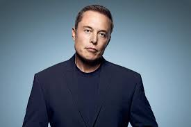

Elon Reeve Musk FRS (/ˈiːlɒn/; born June 28, 1971) is an engineer
, industrial designer, technology entrepreneur and philanthropist.[2][3][4][5] He is the founder, CEO, CTO and
chief designer of SpaceX;[6] early investor,[7][note 1] CEO and product architect of Tesla, Inc.;[10][11]
founder of The Boring Company;[12] co-founder of Neuralink; and co-founder and initial co-chairman of OpenAI.[13]
He was elected a Fellow of the Royal Society (FRS) in 2018.[14][15] In 2018, he was ranked 25th on the Forbes
list of The World's Most Powerful People,[16] and was ranked joint-first on the Forbes list of the Most
Innovative Leaders of 2019.[17] As of August 14, 2020, his net worth was estimated at $76.7 billion U.S.
dollars and he is listed by Forbes as the 7th-richest person in the world.[18][19][1] He is the longest
tenured CEO of any automotive manufacturer globally.[20]
Musk was born to a Canadian mother and South African father and raised in Pretoria,
South Africa.[21] He briefly attended the University of Pretoria before moving to Canada when he was 17 to attend
Queen's University.[16] He transferred to the University of Pennsylvania two years later, where he received a
bachelor's degree in economics from the Wharton School[22] and a bachelor's degree in physics from the
College of Arts and Sciences.[23] He moved to California in 1995 to begin a Ph.D. in applied physics and
material sciences at Stanford University, but decided to pursue a business career instead of enrolling.[24]
He co-founded (with his brother Kimbal) Zip2, a web software company, which was acquired by Compaq for
$340 million in 1999. Musk then founded X.com, an online bank. It merged with Confinity in 2000, which had
launched PayPal the previous year and was subsequently bought by eBay for $1.5 billion in October 2002.[10][25][26]
In May 2002, Musk founded SpaceX, an aerospace manufacturer and space transport services company, of which he is CEO
and lead designer. He joined Tesla Motors, Inc. (now Tesla, Inc.), an electric vehicle manufacturer, in 2004,
the year after it was founded,[10] became its product architect, and became its CEO in October 2008.[27]
(Musk says "Chief Engineer" of both SpaceX and Tesla would be a more accurate title than CEO.)[28] In 2006,
he helped create SolarCity, a solar energy services company (now a subsidiary of Tesla). In 2015, Musk co-founded
OpenAI, a nonprofit research company that aims to promote friendly artificial intelligence.
In July 2016, he co-founded Neuralink, a neurotechnology company focused on developing brain–comp
In December 2016, Musk founded The Boring Company, an infrastructure and tunnel construction company focused on tunnels optimized for electric vehicles.
In addition to his primary business pursuits,Musk has envisioned a high-speed transportation system known as the Hyperloop.
Musk has said the goals of SpaceX, Tesla, and SolarCity revolve around his vision to "change the world and help humanity".
His goals include reducing global warming through sustainable energy production and consumption, and lessening the risk of human extinction
PAYPAL
In March 1999, Musk co-founded X.com, an online financial services and e-mail payment company,
with US$10 million from the sale of Zip2.[69][68] One year later,
the company merged with Confinity,[67][71] which had a money-transfer service called PayPal.
The merged company focused on the PayPal service and was renamed PayPal in 2001.
Musk was ousted in October 2000 from his role as CEO (although he remained on the board) due to
disagreements with other company executives over his desire to move PayPal's Unix-based infrastructure to a
Microsoft one.
In October 2002, PayPal was acquired by eBay for US$1.5 billion in stock,
of which Musk received US$165 million.[74] Before its sale, Musk, who was the company's largest shareholder,
owned 11.7% of PayPal's shares.[75][76]
In July 2017, Musk purchased the domain X.com from PayPal for an undisclosed amount,
stating that it has sentimental value to him.[77]

<
TESLA
Tesla, Inc. (originally Tesla Motors) was incorporated in July 2003 by Martin Eberhard and Marc Tarpenning,
who financed the company until the Series A round of funding.[125] Both men played active roles in the company's early
development prior to Elon Musk's involvement.
Musk led the Series A round of investment in February 2004, joining Tesla's board of directors as itschairman.
According to Musk, all three, along with J. B. Straubel, were inspired by the earlier AC Propulsion tzero electric roadster prototype.
Musk took an active role within the company and oversaw Roadster product design at a detailed level, but was not deeply involved in day-to-day business operations.[131][failed verification][non-primary source needed] Following the financial crisis in 2008 and after a series of escalating conflicts in 2007, Eberhard was ousted from the firm.[96][132] Musk assumed leadership of the company as CEO and product architect in 2008, positions he still holds today. As of 2019, Elon Musk is the longest tenured CEO of any automotive manufacturer globally.[20]
Tesla's "master plan", as iterated by Musk in 2006[133] was:
Build sports car. Use that money to build an affordable car.
Use that money to build an even more affordable car. While doing above, also provide zero-emission electric power generation options.
Tesla Motors first built an electric sports car, the Tesla Roadster, in 2008, with sales of about 2,500 vehicles to 31 countries, which was the first serial production all-electric car to use lithium-ion battery cells.[134]. Tesla began delivery of its four-door Model S sedan on June 22, 2012. It unveiled its third product, the Model X, aimed at the SUV/minivan market, on February 9, 2012; however, the Model X launch was delayed until September 2015.[135][136][137] In addition to its own cars, Tesla sold electric powertrain systems to Daimler for the Smart EV, Mercedes B-Class Electric Drive and Mercedes A Class, and to Toyota for the RAV4 EV. Musk was able to bring in both companies as long-term investors in Tesla.[1
SPACEX
In 2001, Musk conceived Mars Oasis,
an idea to land a miniature experimental greenhouse on Mars,
containing food crops growing on Martian regolith, in an attempt to reawaken public interest in space exploration.
In October 2001, Musk traveled to Moscow with Jim Cantrell (an aerospace supplies fixer), and Adeo Ressi (his best friend from college),
to buy refurbished Dnepr Intercontinental ballistic missiles (ICBMs) that could send the envisioned payloads into space.
The group met with companies such as NPO Lavochkin and Kosmotras; however, according to Cantrell,
Musk was seen as a novice and was consequently spat on by one of the Russian chief designers.
The group returned to the United States empty-handed. In February 2002, the group returned to Russia to look for three ICBMs, bringing along Mike Griffin.
Griffin had worked for the CIA's venture capital arm, In-Q-Tel, as well as NASA's Jet Propulsion Laboratory, and was just leaving Orbital Sciences, a maker
of satellites and spacecraft. The group had another meeting with Kosmotras and were offered one rocket for US$8 million.
Musk considered the price too high, and stormed out of the meeting. On the flight back from Moscow, Musk realized that he could start a company that could
build the affordable rockets he needed. According to early Tesla and SpaceX investor Steve Jurvetson, Musk calculated that the raw materials for building a rocket were only 3 percent of the sales price of a rocket at the time.
It was concluded that[by whom?], in theory, by applying vertical integration and the modular approach employed in software engineering,
SpaceX could cut launch price by a factor of ten and still enjoy a 70-percent gross margin.better source needed] Ultimately,
Musk ended up founding SpaceX with the long-term goal of creating a true spacefaring civilization.
OPEN AI
n December 2015, Musk announced the creation of OpenAI, a not-for-profit artificial intelligence (AI) research company. OpenAI aims to develop artificial general intelligence in a way that is safe and beneficial to humanity.[209]
By making AI available to everyone, OpenAI wants to "counteract large corporations who may gain too much power by owning super-intelligence systems devoted to profits,
as well as governments which may use AI to gain power and even oppress their citizenry. Musk has stated he wants to counteract the concentration of power.
In 2018 Musk left the OpenAI board to avoid possible future conflicts with his role as CEO of Tesla as Tesla increasingly became involved in AI
through Tesla Autopilot.[211]
In an interview with Joe Rogan in September 2018,
Musk expressed his concerns about the dangers of developing artificial intelligence indiscriminately.
In January 2019 Mark Harris of The Guardian noted that on January 23, 2019, the Musk foundation "added a line to its website,
stating its support for the "development of safe artificial intelligence to benefit humanity"
.

 .
.